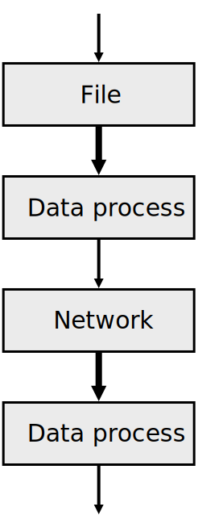
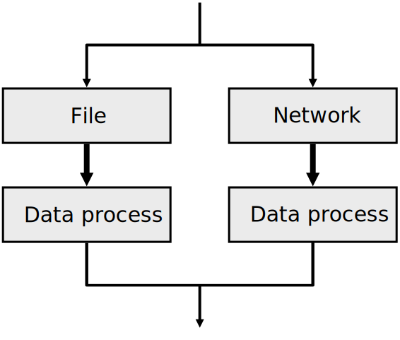
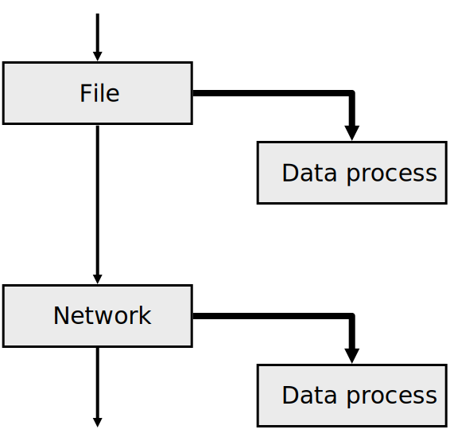

single-threading
multi-threading
asynchronous

const fs = require('fs');
const request = require('request');
let val1;
let val2;
fs.readFile('/tmp/nine', (err, data) => {
val1 = data;
console.log(val1);
});
request('https://alexey.detr.us/val', (err, data) => {
val2 = data.body;
setTimeout(() => {
console.log(val2);
}, 3000);
});
fs.readFile((err, data) => {
});
request((err, data) => {
setTimeout(() => {
}, 3000);
});
console.log('script start');
setTimeout(() => {
console.log('setTimeout');
}, 0);
Promise.resolve().then(() => {
console.log('promise1');
}).then(() => {
console.log('promise2');
});
console.log('script end');